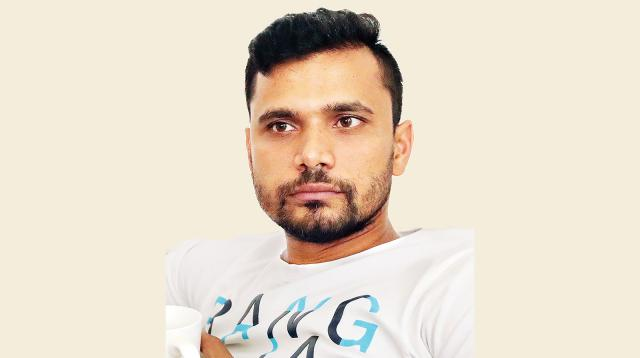

মাশরাফির আসনে নৌকার ১৬ নেতা
মাশরাফি বিন মুর্তজা
নড়াইল-২ (লোহাগড়া-নড়াইল সদরের একাংশ) আসনে ক্রিকেটার মাশরাফি বিন মুর্তজা ছাড়াও আওয়ামী লীগের আরও ১৬ নেতা মনোনয়ন ফরম জমা দিয়েছেন। মাশরাফি গত রোববার সকালে প্রধানমন্ত্রীর সঙ্গে সাক্ষাৎ করে দুপুরে ধানমন্ডির আওয়ামী লীগ কার্যালয়ে গিয়ে ফরম কেনেন।
আওয়ামী লীগের স্থানীয় ১৬ নেতার মধ্যে দলের জেলা সভাপতি–সম্পাদক থেকে শুরু করে অঙ্গসংগঠনের নেতারাও আছেন। নড়াইল জেলা আওয়ামী লীগের সভাপতি সুবাস চন্দ্র বোস বলেন, ‘এটা ঠিক, মনোনয়ন চেয়েছি। কিন্তু প্রধানমন্ত্রী যাঁকে মনোনয়ন দেবেন, তাঁকেই মেনে নেব।’ একই ধরনের মন্তব্য সাধারণ সম্পাদক নিজাম উদ্দিন খানসহ অন্য সবার।
মনোনয়ন জমা দেওয়া অন্যরা হলেন সহসভাপতি সৈয়দ আইয়ুব আলী এবং এস এম আসিফুর রহমান, সদস্য এস কে আবু বাকের, মো. হাসানুজ্জামান ও মো. রাশিদুল বাশার, লোহাগড়া উপজেলা আওয়ামী লীগের উপদেষ্টা লে. কর্নেল (অব.) সৈয়দ হাসান ইকবাল, যুব মহিলা লীগের সাংগঠনিক সম্পাদক শারমিন সুলতানা, আওয়ামী লীগের ত্রাণ ও সমাজকল্যাণ উপকমিটির সদস্য শেখ মো. তরিকুল ইসলাম, লোহাগড়া উপজেলা আওয়ামী লীগের সদস্য মুন্সী কামরুজ্জামান, ব্যবসায়ী বাসুদেব ব্যানার্জি, সাবেক ছাত্রলীগ নেতা হাবিবুর রহমান প্রমুখ।
এ আসনে বিএনপি থেকে মনোনয়ন ফরম নিয়েছেন জেলা বিএনপির সাধারণ সম্পাদক মনিরুল ইসলাম, সাংগঠনিক সম্পাদক শাহরিয়ার রিজভী, জেলা বিএনপির সাবেক সহসভাপতি তবিবর রহমান জোমাদ্দারসহ পাঁচজন। মনিরুল ইসলাম বলেন, ‘মাশরাফি তারকা। বিশ্বব্যাপী তাঁর খ্যাতি। আমরাও তাঁকে ভালোবাসি। কিন্তু রাজনীতির মাঠে নৌকার প্রার্থী হিসেবে তাঁকে বিবেচনা করব।’
এদিকে ২০–দলীয় জোটের শরিক ন্যাশনাল পিপিলস পার্টির (এনপিপি) চেয়ারম্যান ফরিদুজ্জামান ফরহাদ ধানের শীষ নিয়ে নির্বাচন করবেন বলে জানিয়েছেন। তিনি বলেন, ভোট হবে নৌকা বনাম ধানের শীষ। এ ক্ষেত্রে ব্যক্তি মাশরাফি বিবেচনায় থাকবেন না।বিষয়: